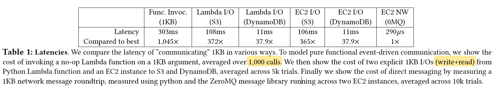
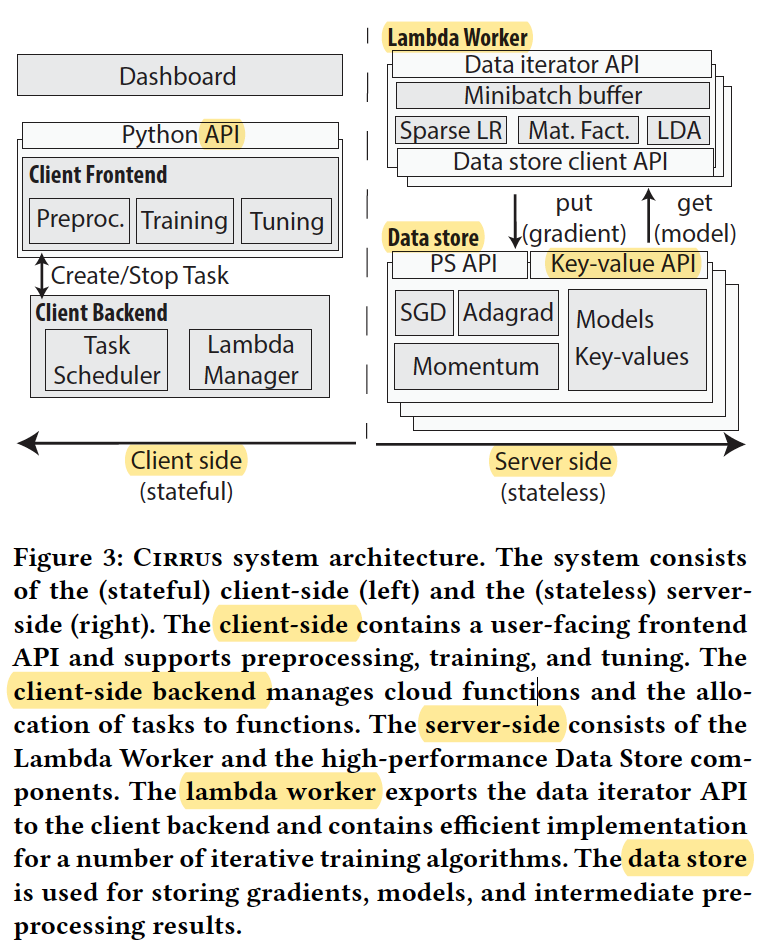
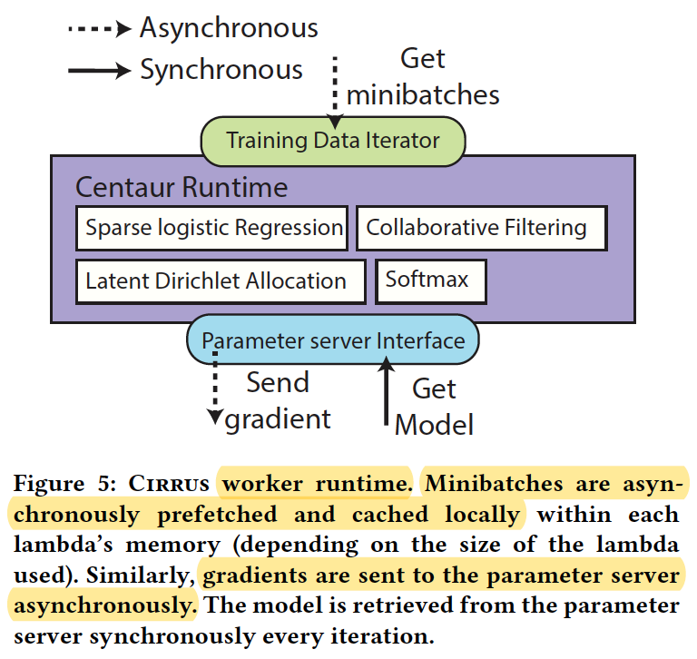
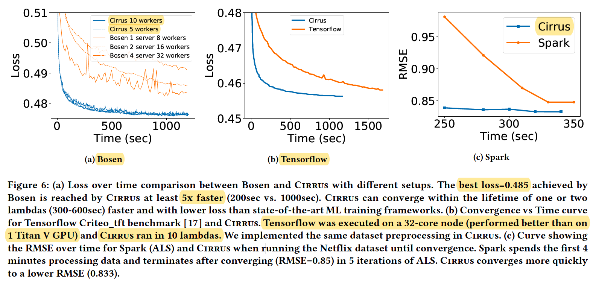
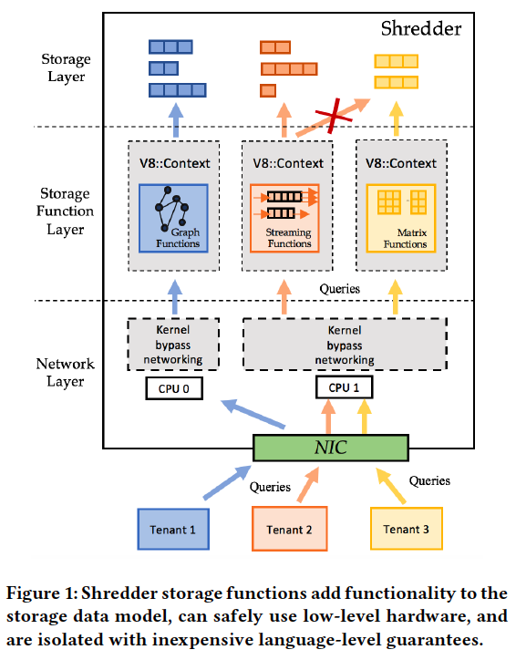
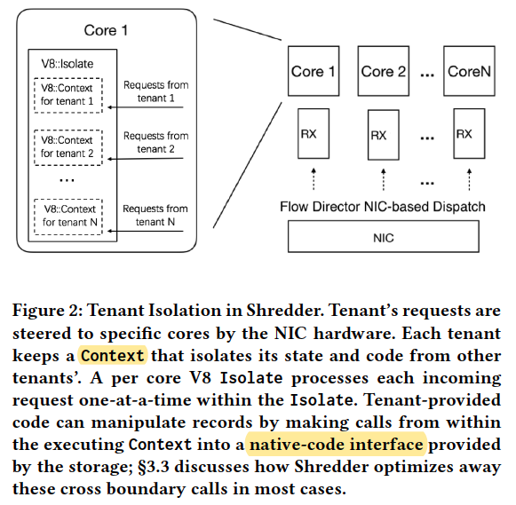
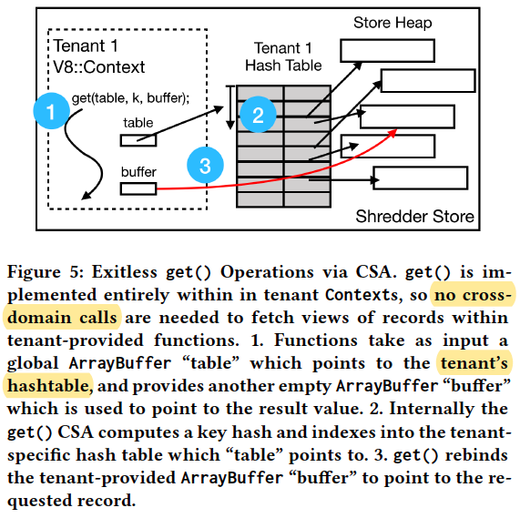
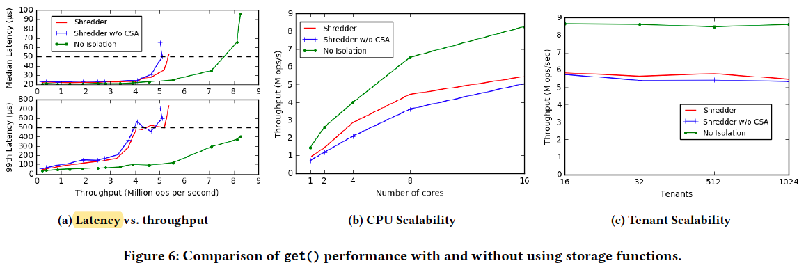
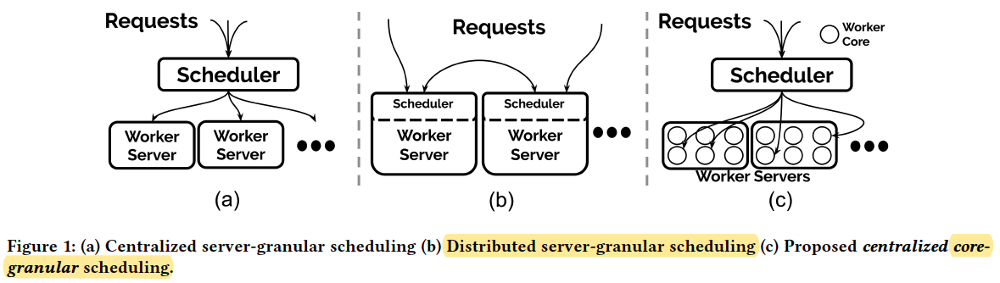
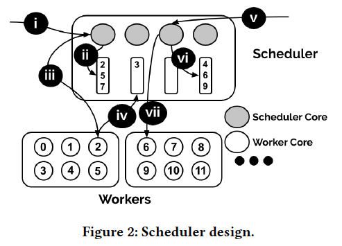

Serverless Computing: One Step Forward, Two Steps Back
Three Design Patterns
Embarrassingly parallel functions
In some applications, each function invocation is an independent task and never needs to communicate with other functions. such “map” functions, which can directly exploit Lambda’s auto-scaling features to scale.Orchestration functions
A second class of use cases leverages serverless functions simply to orchestrate calls to proprietary autoscaling services, such as large-scale analytics. For example, using Lambda functions to preprocess event
streams before funneling them to Athena via S3.Function Composition
The third category consists of collections of functions that are composed to build applications and thus need to pass along outputs and inputs.
Serverless Is Too Less
- Limited Lifetimes
After 15 minutes, function invocations are shut down by the Lambda infrastructure.
There is no way to ensure that subsequent invocations are run on the same VM.
I/O Bottlenecks
Recent studies show that a single Lambda function can achieve on average 538Mbps network bandwidth.
Worse, AWS appears to attempt to pack Lambda functions from the same user together on a single VM, so the limited bandwidth is shared by multiple functions.Communication Through Slow Storage
Two Lambda functions can only communicate through an autoscaling intermediary service.
Hence maintaining state across client calls requires writing the state out to slow storage, and reading it back on every subsequent call.
A number of discussion follow directly.
FaaS is a Data-Shipping Architecture.
FaaS hinders Distributed Computing(slow and expensive storage).
Case Studies: Model Training
(1). Lambda (465 minutes):
Each Lambda is allocated the maximum lifetime (15 min) and 640MB RAM and runs as many training iterations as possible.
Each iteration in Lambda took 3.08 seconds: 2.49 to fetch a 100MB batch from S3 and 0.59 seconds to run the AdamOptimizer.
We trained the model over 10 full passes of the training data, which translates to 31 sequential lambda executions, each of which runs for 15 minutes, or 465 minutes total latency. This costs $0.29.
(2). Tensorflow (22 minutes):
For comparison, we trained the same model on an m4.large EC2 instance, which has 8GB of RAM and 2vCPUs. In this setting, each iteration is significantly faster (0.14 seconds): 0.04 seconds to fetch data from an EBS volume and 0.1 seconds to run the optimizer.
The same training process takes about 1300 seconds (just under 22 minutes), which translates to a cost of $0.04.
Lambda’s limited resources and data-shipping architecture mean that running this algorithm on Lambda is 21× slower and 7.3× more expensive than running on EC2.
Case Studies: Prediction Serving
Only on CPU, and we limited all experiments here to 10-message batches.
If the model was retrieved on every invocation, the average latency over 1,000 batch invocations for the Lambda application was 559ms per batch with S3 and was 447ms with SQS queue.
An EC2 machine (not function) to receive SQS message batches—this showed a latency of 13ms per batch averaged over 1,000 batches—27× faster than our “optimized” Lambda implementation.
An EC2 machine (not function) with ZeroMQ had a per batch latency of 2.8ms—127× faster than the optimized Lambda implementation.
SQS request rate alone would cost $1,584 per hour.
Case Studies: Distributed Computing
try alternative solutions to achieve distributed computation.
we measure the cost of 1KB argument for a Lambda function invocation — this incurs both I/O and function overheads (303ms).
The cost of explicit I/O from Lambda to S3 is 108ms and to DynamoDB is 11ms.
The cost of explicit I/O from EC2 to S3 is 106ms and to DynamoDB is 11ms.
The cost of explicit I/O from EC2 to 0MQ is 290us.
Cirrus: a Serverless Framework for End-to-end MLWorkflows
This work proposes Cirrus, a distributed ML training framework that addresses these challenges by leveraging serverless computing.
End-to-end MLWorkflow Challenges
Over-provisioning
The heterogeneity of the different tasks in an MLworkflowleads to a significant resource imbalance during the execution of a training workflow.
Explicit resource management
The established approach of exposing low-level VM resources, such as storage and CPUs, puts a significant burden on ML developers who are faced with the challenge of provisioning, configuring, and managing these resources for each of their ML workloads.
Serverless Computing
major limitations of existing serverless environments:
Small local memory and storage
AWS lambdas can only access at most 3GB of local RAM and 512MB of local disk
Low bandwidth and lack of P2P communication
We find that the largest AWS Lambda can only sustain 60MB/s of bandwidth. AWS Lambdas do not allow peer-to-peer communication. Thus, common communication strategies used for datacenter ML, such as tree-structured or ring-structured AllReduce communication [43], become impossible to implement efficiently in such environments.
Short-lived and unpredictable launch times
AWS lambdas can take up to several minutes to start after being launched. This means that during training, lambdas start at unpredictable times and can finish in the middle of training. This requires ML runtimes for lambdas to tolerate the frequent departure and arrival of workers.
Lack of fast shared storage
shared storage needs to be low-latency, high-throughput, and optimized for the type of communications in ML workloads.
CIRRUS DESIGN
(1) Worker runtime
The worker runtime provides two APIs.
Data iterator API: prefetches and buffers minibatches in the lambda’s local memory in parallel with the worker’s computations to mitigate the high latency (>10ms) of accessing S3.
Data store client API: data compression, sparse transfers of data, asynchronous communication and sharding across multiple nodes.
(2) Distributed data store
Intermediate stored data(in cloud VMs) to be shared by all workers.
It achieves latencies as low as 300μs versus ≈ 10ms for AWS S3.
Cirrus Implementation
(1) Client backend
Lambdas that are launched during training are relaunched automatically when their lifetime terminates (every 15 minutes).
The backend keeps a pool of threads that can be used for responding to requests for new lambda tasks.
(2) Distributed data store
Cirrus’s distributed data store provides an interface supporting a key-value store interface (set/get) and a parameter-server interface (send gradient / get model).
several optimizations:
- multithreaded server that distributes work across many cores
- data compression for the gradientand models
- sparse gradient and model data structures
(3) Worker runtime
For data access, the runtime provides a minibatch-based iterator backed by a local memory ring-buffer that allows workers to access training minibatches with low latency.
In addition, it provides an efficient API to communicate with the distributed data store.
EVALUATION
Tensorflow was executed on a 32-core node (performed better than on 1 Titan V GPU) and Cirrus ran in 10 lambdas.
Problem
- evaluation not fair.
- Distributed data store how to attend 300μs not clear.
- only focus on throughput not on latency(only example for training).
Narrowing the Gap Between Serverless and its State with Storage Functions
Shredder Design
Internally, Shredder consists of three layers: a networking layer, a storage layer, and a function layer.
Each CPU core runs all three layers, but CPU cores followa shared-nothing design; the state of these layers is partitioned across CPU cores to avoid contention and synchronization overheads.
The storage layer hosts all tenants’ data in memory and has a get()/put() key-value interface.
The function layer matches incoming requests to their storage function code and context, and it executes the operation within a per-core instance of the V8 runtime.
Each V8 runtime has a set of embedded trusted access methods to avoid expensive calls between the function runtime and the storage layer.
Isolation and Context Management
Shredder relies on V8’s Contexts to isolate tenantprovided code.
Zero-copy Data Access
Local get() and put() operations are optimized to avoid copying records into and out of storage whenever possible.
Eliminating Boundary Crossings with CSA
CSA is portable across hardware architectures, and it can be translated into highly efficient machine code.
Key idea
- Separating storage from functions.
- V8 runtime per-core to ensure isolation.
- Zero-copy Data Access
- Trusted CSA code within the V8 runtime is given read-only access to the data storage.
Evaluation
Cost of Isolation; CPU Scalability; Tenant Scalability;
Problem
- the Zero-copy Data Access only supports local memory.
- for remote get, it only discuss the throughput not the lantency.
- V8 JavaScript runtime is heavy.
- bind compute with memory limits the scalability.
Centralized Core-granular Scheduling for Serverless Functions
Existing serverless platforms lack deployment and scheduling mechanisms.
Scheduling granularity
server-level scheduling:
Unpredictable performance due to sharing of physical and virtual resources among function invocations.
distributed task-scheduling:
Scalability challenge stems from latency of scheduling and task migration.
centralized and core-granularity scheduling:
core-granularity improves performance predictability and the centralized design maintains a global view of cluster resources.
A centralized core-granular scheduler
The centralized scheduler runs on a multicore server. We distinguish between cores on the scheduler server, called scheduler cores, and cores on worker servers, called worker cores.
Each scheduler core maintains a list of references to idle worker cores.
i -> iv, when comes a request, it chooses a worker core to execute. After finished, return it.
v -> vii, if no available worker cores, borrow from others.
Problem
- no evaluation
- not specify to ML
Note:
problem:
Platform:
- virtualization technologies
- context switch
- distributed approach(scalability)
- state locally
User:
- 640M RAM and 15min limit
- state from the slow external store
- event granularity(sub-graph)
Common:
- warmed up run-time
- work assignment(event-driven trigger)
Burst:
1, 预测机制，提前copy weights到function附近位置（存储资源比计算资源便宜）
2, 拆分机制，可以把graph拆分成多个stage（function不宜过大，利用stage加载时间去cover中间结果传输时间）
4, 基于ONNX来拆分和执行stage
将graph分成stage:
- 如果传输中间结果的时间，小于，加载stage的时间，可以认为，传输时间不产生费用（和latency）
- 选取数据量小的中间结果进行传输
- 拆分的stage，满足现有的lambda的内存要求
- 模型未开始阶段，先预测需要多少的function，提前把各个stage的weight传输过去
stateful:
- 预加载到内存
- 确保传输的中间结果比较小
- 加入，模型压缩，模型蒸馏？
trade-off between lantency, throughput and cost per request.
Important point:
- tail-lantency
cpu 是否 batch 越大越好
预测所需资源（cpu, memory, therefore time）
提出一种度量，来描述burst
全serverless, 包含 frontend
先考虑技术（拆分model+调度执行），再考虑应用场景（1. request burst
分两步自动化：
- 用state machine统一管理好，已经创建好的，functions
- 自动化创建functions
- 预测workload，并自动拆分onnx model